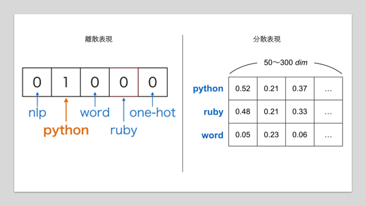
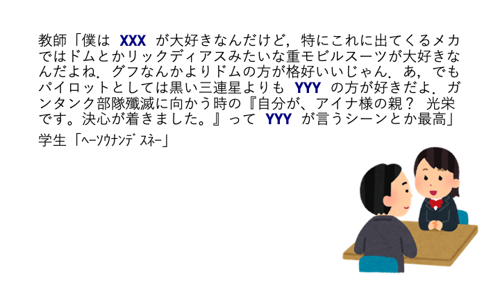
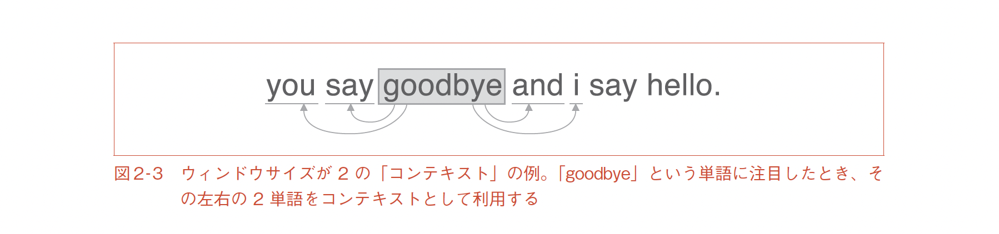
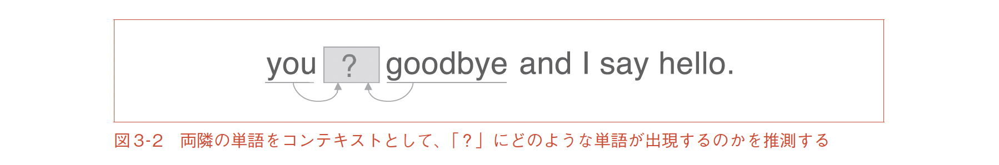
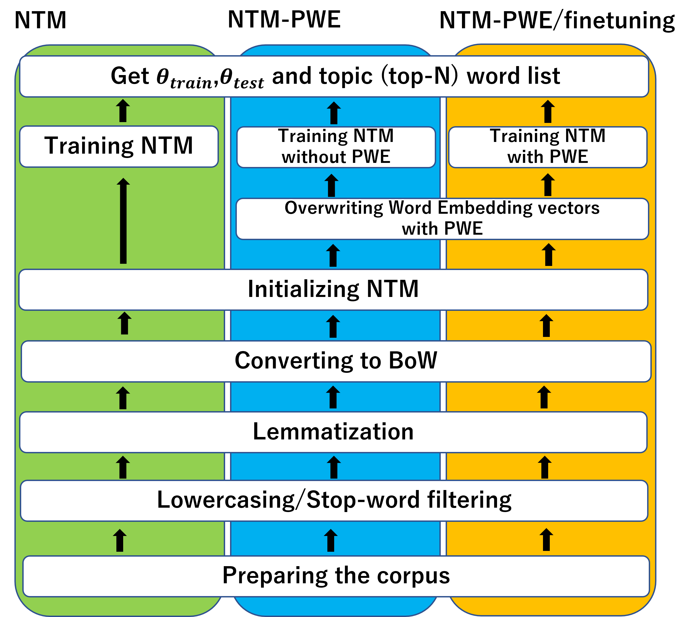

Word2Vec#
Show code cell source
# packageのimport
import os
import math
from typing import Any, Union, Callable, Type, TypeVar
from tqdm.std import trange,tqdm
import numpy as np
import numpy.typing as npt
import pandas as pd
import matplotlib.pyplot as plt
import plotly.express as px
import seaborn as sns
# pytorch関連のimport
import torch
import torch.nn as nn
import torch.nn.functional as F
import torch.optim as optim
単語のベクトル表現#
自然言語処理において，単語をそのまま機械学習モデルに扱わせることはできません．そのため，それぞれの単語に対応するベクトル表現を利用することになります．このベクトル表現方法はいろいろとあり，離散表現と分散表現という大別ができます．これらについて見ていきましょう．
離散表現と分散表現#
単語をベクトルとして表現する方法として古くから使われているのがone-hot表現（1-of-K表現とも呼ばれます）です．これはある要素のみが1でそれ以外が0であるような表現のことであり，単語に対応したベクトルのある要素のみが1でそれ以外が0であるようなベクトルを用いることで，単語をベクトル表現します．
one-hot表現のイメージ
出典: 위클리 NLP Week 2 - 단어를 가방에 때려 넣으면 문장이 된다

one-hotベクトルはシンプルなアイディアで理解しやすいですが，語彙の数だけベクトルの次元数が必要になることに注意が必要です．また，「オートバイ」と「バイク」のようなほぼほぼ似たような意味の単語同士の類似度をcosine類似度で計算しようとしても，それぞれが別の次元が立っているだけのベクトルなので内積0となってしまい，意味的な類似度を測ることには適さないことがわかります．
ここではこのone-hot表現を離散表現の例として紹介しました．
また，文書中に登場した単語のone-hotベクトルを足し合わせることで，文書をベクトル表現するBag-of-Words（BoW）という表現方法もあります．
BoWのイメージ
出典: 위클리 NLP Week 2 - 단어를 가방에 때려 넣으면 문장이 된다

この場合はただ足し合わせるだけなので，文書中に同じ単語が何回か登場したら，1以上の整数がベクトル内に現れることもあります．

onehotやbowの様な表現方法は非常に簡便で分かりやすい反面，語彙数分だけの次元数が常に必要になるなどの嬉しくない特徴を持ちます．
様々な分散表現#
one-hot表現に対して，分散表現とは単語を語彙数に比べて低次元の実数値ベクトルで表す表現です．気持ちとしては，one-hotで表現された単語をより低次元空間の座標として表現し，one-hot→embedding→onehotの様に可逆圧縮しているイメージです．そのため多くの場合任意の比較的小さい次元数（50, 100, 200, 300次元など）が用いられています．これの利点としては，
語彙数に左右されずにベクトルの次元数を決定できるため計算量を抑えられる
同じような意味の単語に同じようなベクトル表現を当てがうことができるのならば，cosine類似度のような簡単な計算で意味の類似度（のようなもの）を評価することができる
などが考えられます．現代の自然言語処理においても，このアプローチが取られることが多いです．

離散表現と分散表現
出典: なぜ自然言語処理にとって単語の分散表現は重要なのか？
この分散表現の作り方には色々な方法があります．例えばBoWで表現された文章データをNMF（Non-Negative Matrix Factorization, 非負値行列因子分解）[Lee and Seung, 1999, Lee and Seung, 2000]やLSA（Latent Semantic Analysis, 潜在的意味解析）[Deerwester et al., 1990]のような手法で行列分解することで作成することもできます．ただし作成できるベクトルが持つ意味（作成されたベクトルがどのような使い方に適したものなのか）は手法により様々です．今回は，ニューラルネットワークを用いて単語の分散表現が作れるword2vec[Mikolov et al., 2013, Mikolov et al., 2013, Mikolov et al., 2013]と呼ばれる手法群の中でも，CBOWについて紹介します．
Continuous Bag-of-Words#
CBOWと分布仮説#
例えば以下の文章があったときに，XXX や YYY に相当する単語がなんなのかがわかるでしょうか？

（この例ではもちろんXXXは ガンダム ですし，YYYは ノリス・パッカード大佐 ですね．）
私たちはある単語を聞きそびれたり，何かの固有名詞が分からなくても，周辺の言葉から大体類推して言葉の意味を把握することができます．
このような「単語の意味は、周囲の単語によって形成される」という仮説を自然言語処理では 分布仮説 と呼びます．
この文脈において，対象の単語の周辺の単語のことをコンテキストと呼びます．

説明したい単語「goodbye」と，その周辺にあってこの単語の意味を推測するのに使えそうな単語達（コンテキスト）の関係．
出典: ゼロから作るDeep Learning 2 自然言語処理編
この分布仮説をもとに，ニューラルネットワークを使って単語の意味をある程度表現できるようなベクトル表現を獲得できる手法がこれから紹介するCBOWです．
CBOWのアーキテクチャ#
CBoWでは，周辺の単語を入力にして目的の単語を予測するネットワークを構築します．

コンテキストを使った単語の予測．
出典: ゼロから作るDeep Learning 2 自然言語処理編
CBOWは単純なMLPを利用して，語彙数\(V\)，埋め込み次元数\(N\)の場合に，全ての語彙それぞれに対応する単語埋め込みベクトルの束である\(\mathbf{W}_{V, N}\)を作成します．（ノーテーションは正しく定義しておけばなんでもいいのですが，私は埋め込み次元数を\(L\)と置くことが多いです．）
word2vecのアーキテクチャ．左側がCBoW，また右側はSkip-Gram．
出典: Demographic Prediction Based on User Reviews about Medications
![Illustration of the word2vec models: (a) CBOW, (b) skip-gram [16, 33].](https://www.researchgate.net/profile/Elena-Tutubalina/publication/318507923/figure/fig2/AS:613947946319904@1523388005889/Illustration-of-the-word2vec-models-a-CBOW-b-skip-gram-16-33.png)
実装#
Embeddingsから任意の単語に対応したものを取り出す
CBoWの実装を考える時に気にしなければいけないのが，どうやって任意の単語の埋め込みベクトルを取り出すのかと言う問題です．例えば語彙数が5, 埋め込み次元数が3の単語埋め込み行列があるとします．
W = torch.tensor([[ 0.4019, -0.1891, -0.3723],
[-0.3303, 0.2106, -0.0976],
[-0.2294, -0.3021, 0.3005],
[ 0.2210, 0.4406, 0.1265],
[-0.3187, -0.2617, 0.0953]],dtype=torch.float32)
ここから0番目の語彙の単語埋め込みベクトルを取り出すには，onehotベクトルとのdot積を取ればOKです．
x = torch.tensor([1,0,0,0,0],dtype=torch.float32)
x @ W
出力: tensor([ 0.4019, -0.1891, -0.3723])
また同様に，これはミニバッチごとにまとめて取ることも可能です．
x = torch.tensor([[1,0,0,0,0],[0,0,0,0,1]],dtype=torch.float32)
x @ W
出力:
tensor([[ 0.4019, -0.1891, -0.3723],
[-0.3187, -0.2617, 0.0953]])
contextsに含まれる単語の単語埋め込みベクトルを取る際にも上のテクニックは使えますが，このベクトルを取り出した後に要素ごとに平均をとる必要があります．これはつまり要素ごとに足した後に単語数で割っているだけなので，contextsをbowにして，これを入力にすれば「要素ごとに足した後のベクトル」が得られます．後はcontextsの要素数で各要素を割ればOKです．
まずは，forwardメソッドの入力値が「コンテクストのBoW表現」である場合の実装を考えます．一層目の全結合層の結合重みをそれぞれの語彙に対応する単語埋め込みベクトルとして利用しましょう．
一つ目のnn.Linearはこのモデルで扱いたい語彙（異なり語，ユニークな単語）の数\(V\)（コード中では vocab_size）の数だけベクトルを持っており，入力された語彙に対応したベクトルを取り出して返します．この語彙に対応したベクトルを 単語埋め込みベクトル と呼びます．また，単語埋め込みベクトルの次元数\(N\)を 埋め込み次元数 などと呼び，コード中では embedding_dimという変数で扱います．
ある単語は，同じ文書中に存在する「その単語の周辺に出現する単語」によって類推することができるというのが自然言語処理の分布仮説でした．これに則り，周辺単語を入力として，予測したい単語の出現確率を出力するMLPを作ります．
class CBoW(nn.Module):
def __init__(self, vocab_size:int, embedding_dim:int) -> None:
super().__init__()
self.embeddingbag = nn.Linear(vocab_size, embedding_dim, bias=False)
self.linear = nn.Linear(embedding_dim, vocab_size)
def forward(self, inputs:Any)->Any:
h = self.embeddingbag(inputs) / inputs.sum(1)[:,None]
return self.linear(h)
この実装のCBoWクラスはMLPとほぼ同じなので非常にわかりやすいですが，contextsをBoW表現に直す必要があります．データが少ない場合は問題になりませんが，データ量が増えた時には大変です．
PyTorchでは，このような実装をしなくとも単語のid列を入力に，onehotやbowを介さずに埋め込みベクトルを返してくれるnn.Embeddingクラスとnn.Embeddingbagクラスがあります．これを使ってより賢い実装を以下に示します．
Hint
単語idを一つ一つ単語埋め込みベクトルに変換したいならnn.Embeddingを使います．文書（単語idのシーケンス）に対する単純な埋め込みベクトルが欲しいならばnn.Embeddingbagを使います．
class CBoW(nn.Module):
def __init__(self, vocab_size:int, embedding_dim:int) -> None:
super().__init__()
self.embeddingbag = nn.EmbeddingBag(vocab_size, embedding_dim)
self.linear = nn.Linear(embedding_dim, vocab_size)
def forward(self, inputs:Any)->Any:
h = self.embeddingbag(inputs) / inputs.size(-1)
return self.linear(h)
クラスの実装上で明確に異なるのはMLPの最初のLinear層の代わりに，Embeddingbagレイヤーと名付けられた層が追加されていることです．これによりforwardメソッドへの入力をいちいちonehotやbowにしなくとも，単語idのシーケンスを渡すだけで，埋め込みベクトルを返してくれます．
最終層は「ターゲットの単語が出現する確率」なので，Softmax関数を用います（ここでもSoftmaxを利用することにします）．ただし，word2vecが発表された当初はGPUで計算するのではなく，CPUで計算できるような工夫として，Softmaxを近似した別の関数を利用していました．これにはHierarchical Softmax（階層的ソフトマックス）やNegative Sampling（不例サンプリング）が用いられます．是非調べてみてください．
損失関数#
\(x\)の出現確率\(p(x)\)とモデルの予測した\(x\)の出現確率\(q(x)\)の交差エントロピーは以下のように求まります．
今回の場合，予測したい単語が\(y\)であり，これは単語idになっています．これを語彙数\(V\)のonehotベクトルにする関数を\(\operatorname{onehot}(y)\)としましょう．
コード中，CBoWのforwardメソッドの出力（予測する値）はself.linear(h)であり，下に示す訓練ループの中ではlogitsとされてますが，これは全結合層の出力でしかありません．本来はこれをSoftmaxに通した値が出力値であり，これが予測したい単語の出現確率です．よってここでのクロスエントロピーは
で求められます．ただし，minibatchごとに訓練する場合は，データ一つ一つに対して計算した後に平均をとる必要があります．
実験#
データのダウンロード#
wikipediaを使いやすい形で公開してくれているtext8の日本語版，ja.text8を使ってw2vを学習してみましょう．
import os
if "ja.text8" not in os.listdir("./input"):
!wget -P ./data https://s3-ap-northeast-1.amazonaws.com/dev.tech-sketch.jp/chakki/public/ja.text8.zip
!unzip ./input/ja.text8.zip -d ./input/
データの準備#
with open("./input/ja.text8") as f:
text8 = f.read()
print(text8[:200])
ちょん 掛け （ ちょん がけ 、 丁 斧 掛け ・ 手斧 掛け と も 表記 ） と は 、 相撲 の 決まり 手 の ひとつ で ある 。 自分 の 右 （ 左 ） 足 の 踵 を 相手 の 右 （ 左 ） 足 の 踵 に 掛け 、 後方 に 捻っ て 倒す 技 。 手斧 （ ちょう な ） を かける 仕草 に 似 て いる こと から 、 ちょう な が 訛っ て ちょん 掛け と なっ
ja.text8では（英文のように）単語ごとにスペースを入れてくれているので，簡単にこれ以降の自然言語処理に進めます．このような処理を 分かち書き と呼びます．
本当はtext8の全てのデータを使いたいのですが，学習に時間がかかりすぎるので1/10の量を使うことにします．
LIMIT = math.floor(len(text8)*0.1)
print(f"{LIMIT}/ {len(text8)}")
text8 = text8[:LIMIT]
4650779/ 46507793
読み込んだテキストから，以下の条件で単語をフィルタリングします．
日本語のみで構成された単語だけを取り出します．
5個以上の文書に出現している単語のみを取り出し
ここまでやった後に，語彙の辞書を作ります．
id2word（id→単語）
word2id (単語→id)
import re
def build_simply_dictionary(texts):
token_set = set(token for text in texts for token in text.split())
word2id = {token:id for id, token in enumerate(token_set)}
return word2id
def my_analyzer(text):
#text = code_regex.sub('', text)
tokens = text.split()
tokens = filter(lambda token: re.search(r'[ぁ-ん]+|[ァ-ヴー]+|[一-龠]+', token), tokens)
return tokens
def build_dictionary(texts, min_df=1):
from sklearn.feature_extraction.text import CountVectorizer
countvectorizer = CountVectorizer(min_df=min_df, analyzer=my_analyzer)
X = countvectorizer.fit_transform(texts)
id2word = {id:w for id,w in enumerate(countvectorizer.get_feature_names_out())}
word2id = {w:id for id,w in id2word.items()}
return id2word, word2id, X
texts = text8.split("。")
id2word, word2id,X = build_dictionary(texts,5)
V = len(id2word)
D = len(texts)
print(f"文書数: {D}, 語彙数: {V}")
文書数: 57498, 語彙数: 17143
ここでは，予測したい単語とコンテキストを合わせたものをウィンドウと呼びます．このウィンドウサイズを5として，予測したい単語の前後2単語をまとめた5単語を取り出し，contextsとtargetを作成します．
def build_contexts_and_target(preprocessed_texts, window_size=5):
contexts = []
target = []
a = window_size//2
for text in preprocessed_texts:
for i in range(a, len(text)-a):
target.append(text[i])
tmp = text[i-a:i]
tmp += text[i+1:i+1+a]
contexts.append(tmp)
return np.array(contexts), np.array(target)
WINDOW_SIZE = 11
preprocessed_texts = [[word2id[w] for w in text.split() if w in word2id] for text in texts]
preprocessed_texts = [text for text in preprocessed_texts if len(text) > WINDOW_SIZE]
contexts, target = build_contexts_and_target(preprocessed_texts, WINDOW_SIZE)
print("前処理後の文書数:", len(preprocessed_texts))
print(f"contextsの数: {len(contexts)}")
前処理後の文書数: 44599
contextsの数: 750947
ミニバッチを作成する関数を用意します．
def get_batch(contexts, target, batch_size=32, shuffle=True):
D = target.size
index = np.arange(D)
if shuffle:
np.random.shuffle(index)
n_batches = D // batch_size
for minibatch_indexes in np.array_split(index, n_batches):
a = torch.tensor(contexts[minibatch_indexes])
b = torch.tensor(target[minibatch_indexes])
yield a,b
訓練ループの作成#
通常のMLPと同様の学習ループを作成します．w2vの学習は時間がかかるので，プログレスバーを表示するようにしておきます．ここではepochごとに更新するバーとミニバッチごとに更新するバーを用意します．（ここで使うコーパスサイズだと，CPUで10~20分程度かかります）
学習が終わり次第，損失関数の増減を折れ線グラフにして確認できるようにもしておきましょう．
max_epochs = 10
lr = 0.01
batch_size = 512
L = 50
n_batches = len(target) // batch_size
DEVICE="cpu"
if torch.cuda.is_available():
DEVICE ="cuda:0"
cbow = CBoW(V, L)
criterion = nn.CrossEntropyLoss()
save_fname = f"{cbow.__class__.__name__}_ep{max_epochs}_lr{lr}_b{batch_size}_emb{L}.pth"
"""
# 学習済みの重みがある場合
print("loading pretrained weights...")
cbow.load_state_dict(torch.load(f"./output/w2v-{save_fname}"))
cbow.eval()
"""
# 学習済みの重みがない場合
print("training CBoW from scrach...")
cbow.train()
cbow = cbow.to(DEVICE)
optimizer = optim.Adam(cbow.parameters(), lr=lr)
monitoring_loss = []
for epoch in trange(max_epochs):
with tqdm(total=n_batches) as tbar:
for batch in get_batch(contexts, target, batch_size):
x,y = batch
x,y = x.to(DEVICE), y.to(DEVICE)
optimizer.zero_grad()
logits = cbow(x)
loss = criterion(logits, y)
loss.backward()
optimizer.step()
monitoring_loss.append(float(loss))
tbar.update(1)
cbow.eval()
cbow = cbow.cpu()
torch.save(cbow.state_dict(), f"./output/w2v-{save_fname}")
# プロット
plt.title("cross entropy of training set")
plt.xlabel("iteration")
plt.ylabel("cross entropy loss")
plt.plot(monitoring_loss)
plt.show()
Show code cell output
training CBoW from scrach...
0%| | 0/10 [00:00<?, ?it/s]
0%| | 0/1466 [00:00<?, ?it/s]
0%|█▏ | 5/1466 [00:00<00:32, 44.79it/s]
1%|███ | 13/1466 [00:00<00:24, 59.82it/s]
1%|████▋ | 20/1466 [00:00<00:22, 64.12it/s]
2%|██████▌ | 28/1466 [00:00<00:21, 67.36it/s]
2%|████████▏ | 35/1466 [00:00<00:21, 67.30it/s]
3%|█████████▊ | 42/1466 [00:00<00:21, 67.79it/s]
3%|███████████▍ | 49/1466 [00:00<00:20, 68.35it/s]
4%|█████████████▎ | 57/1466 [00:00<00:20, 69.35it/s]
4%|███████████████▏ | 65/1466 [00:00<00:20, 70.04it/s]
5%|█████████████████ | 73/1466 [00:01<00:19, 70.59it/s]
6%|██████████████████▉ | 81/1466 [00:01<00:19, 70.35it/s]
6%|████████████████████▊ | 89/1466 [00:01<00:19, 70.40it/s]
7%|██████████████████████▋ | 97/1466 [00:01<00:19, 70.85it/s]
7%|████████████████████████▍ | 105/1466 [00:01<00:19, 70.55it/s]
8%|██████████████████████████▎ | 113/1466 [00:01<00:19, 70.74it/s]
8%|████████████████████████████▏ | 121/1466 [00:01<00:19, 70.55it/s]
9%|██████████████████████████████ | 129/1466 [00:01<00:19, 70.26it/s]
9%|███████████████████████████████▊ | 137/1466 [00:01<00:18, 70.41it/s]
10%|█████████████████████████████████▋ | 145/1466 [00:02<00:18, 70.51it/s]
10%|███████████████████████████████████▌ | 153/1466 [00:02<00:18, 70.70it/s]
11%|█████████████████████████████████████▍ | 161/1466 [00:02<00:18, 71.10it/s]
12%|███████████████████████████████████████▎ | 169/1466 [00:02<00:18, 71.61it/s]
12%|█████████████████████████████████████████▏ | 177/1466 [00:02<00:18, 71.21it/s]
13%|███████████████████████████████████████████ | 185/1466 [00:02<00:18, 69.89it/s]
13%|████████████████████████████████████████████▉ | 193/1466 [00:02<00:18, 70.15it/s]
14%|██████████████████████████████████████████████▊ | 201/1466 [00:02<00:17, 70.29it/s]
14%|████████████████████████████████████████████████▌ | 209/1466 [00:03<00:17, 70.80it/s]
15%|██████████████████████████████████████████████████▍ | 217/1466 [00:03<00:17, 70.87it/s]
15%|████████████████████████████████████████████████████▎ | 225/1466 [00:03<00:17, 70.91it/s]
16%|██████████████████████████████████████████████████████▏ | 233/1466 [00:03<00:17, 71.31it/s]
16%|████████████████████████████████████████████████████████ | 241/1466 [00:03<00:17, 70.90it/s]
17%|█████████████████████████████████████████████████████████▉ | 249/1466 [00:03<00:17, 71.01it/s]
18%|███████████████████████████████████████████████████████████▊ | 257/1466 [00:03<00:16, 71.28it/s]
18%|█████████████████████████████████████████████████████████████▋ | 265/1466 [00:03<00:16, 70.90it/s]
19%|███████████████████████████████████████████████████████████████▌ | 273/1466 [00:03<00:16, 71.16it/s]
19%|█████████████████████████████████████████████████████████████████▎ | 281/1466 [00:04<00:16, 71.51it/s]
20%|███████████████████████████████████████████████████████████████████▏ | 289/1466 [00:04<00:16, 70.82it/s]
20%|█████████████████████████████████████████████████████████████████████ | 297/1466 [00:04<00:16, 70.66it/s]
21%|██████████████████████████████████████████████████████████████████████▉ | 305/1466 [00:04<00:16, 71.22it/s]
21%|████████████████████████████████████████████████████████████████████████▊ | 313/1466 [00:04<00:16, 71.33it/s]
22%|██████████████████████████████████████████████████████████████████████████▋ | 321/1466 [00:04<00:16, 71.20it/s]
22%|████████████████████████████████████████████████████████████████████████████▌ | 329/1466 [00:04<00:16, 70.94it/s]
23%|██████████████████████████████████████████████████████████████████████████████▍ | 337/1466 [00:04<00:15, 71.47it/s]
24%|████████████████████████████████████████████████████████████████████████████████▏ | 345/1466 [00:04<00:15, 71.35it/s]
24%|██████████████████████████████████████████████████████████████████████████████████ | 353/1466 [00:05<00:15, 71.69it/s]
25%|███████████████████████████████████████████████████████████████████████████████████▉ | 361/1466 [00:05<00:15, 71.55it/s]
25%|█████████████████████████████████████████████████████████████████████████████████████▊ | 369/1466 [00:05<00:15, 71.93it/s]
26%|███████████████████████████████████████████████████████████████████████████████████████▋ | 377/1466 [00:05<00:15, 72.05it/s]
26%|█████████████████████████████████████████████████████████████████████████████████████████▌ | 385/1466 [00:05<00:14, 72.40it/s]
27%|███████████████████████████████████████████████████████████████████████████████████████████▍ | 393/1466 [00:05<00:14, 72.07it/s]
27%|█████████████████████████████████████████████████████████████████████████████████████████████▎ | 401/1466 [00:05<00:14, 71.69it/s]
28%|███████████████████████████████████████████████████████████████████████████████████████████████▏ | 409/1466 [00:05<00:14, 72.29it/s]
28%|████████████████████████████████████████████████████████████████████████████████████████████████▉ | 417/1466 [00:05<00:14, 72.09it/s]
29%|██████████████████████████████████████████████████████████████████████████████████████████████████▊ | 425/1466 [00:06<00:14, 71.76it/s]
30%|████████████████████████████████████████████████████████████████████████████████████████████████████▋ | 433/1466 [00:06<00:14, 71.77it/s]
30%|██████████████████████████████████████████████████████████████████████████████████████████████████████▌ | 441/1466 [00:06<00:14, 72.14it/s]
31%|████████████████████████████████████████████████████████████████████████████████████████████████████████▍ | 449/1466 [00:06<00:14, 72.28it/s]
31%|██████████████████████████████████████████████████████████████████████████████████████████████████████████▎ | 457/1466 [00:06<00:13, 72.41it/s]
32%|████████████████████████████████████████████████████████████████████████████████████████████████████████████▏ | 465/1466 [00:06<00:13, 72.36it/s]
32%|██████████████████████████████████████████████████████████████████████████████████████████████████████████████ | 473/1466 [00:06<00:13, 72.54it/s]
33%|███████████████████████████████████████████████████████████████████████████████████████████████████████████████▉ | 481/1466 [00:06<00:13, 72.42it/s]
33%|█████████████████████████████████████████████████████████████████████████████████████████████████████████████████▋ | 489/1466 [00:06<00:13, 72.93it/s]
34%|███████████████████████████████████████████████████████████████████████████████████████████████████████████████████▌ | 497/1466 [00:07<00:13, 72.45it/s]
34%|█████████████████████████████████████████████████████████████████████████████████████████████████████████████████████▍ | 505/1466 [00:07<00:13, 72.19it/s]
35%|███████████████████████████████████████████████████████████████████████████████████████████████████████████████████████▎ | 513/1466 [00:07<00:13, 72.51it/s]
36%|█████████████████████████████████████████████████████████████████████████████████████████████████████████████████████████▏ | 521/1466 [00:07<00:13, 72.32it/s]
36%|███████████████████████████████████████████████████████████████████████████████████████████████████████████████████████████ | 529/1466 [00:07<00:12, 72.19it/s]
37%|████████████████████████████████████████████████████████████████████████████████████████████████████████████████████████████▉ | 537/1466 [00:07<00:12, 72.27it/s]
37%|██████████████████████████████████████████████████████████████████████████████████████████████████████████████████████████████▊ | 545/1466 [00:07<00:12, 71.89it/s]
38%|████████████████████████████████████████████████████████████████████████████████████████████████████████████████████████████████▋ | 553/1466 [00:07<00:12, 71.54it/s]
38%|██████████████████████████████████████████████████████████████████████████████████████████████████████████████████████████████████▍ | 561/1466 [00:07<00:12, 70.10it/s]
39%|████████████████████████████████████████████████████████████████████████████████████████████████████████████████████████████████████▎ | 569/1466 [00:08<00:12, 70.65it/s]
39%|██████████████████████████████████████████████████████████████████████████████████████████████████████████████████████████████████████▏ | 577/1466 [00:08<00:12, 70.66it/s]
40%|████████████████████████████████████████████████████████████████████████████████████████████████████████████████████████████████████████ | 585/1466 [00:08<00:12, 71.34it/s]
40%|█████████████████████████████████████████████████████████████████████████████████████████████████████████████████████████████████████████▉ | 593/1466 [00:08<00:12, 71.11it/s]
41%|███████████████████████████████████████████████████████████████████████████████████████████████████████████████████████████████████████████▊ | 601/1466 [00:08<00:12, 69.78it/s]
42%|█████████████████████████████████████████████████████████████████████████████████████████████████████████████████████████████████████████████▋ | 609/1466 [00:08<00:12, 70.35it/s]
42%|███████████████████████████████████████████████████████████████████████████████████████████████████████████████████████████████████████████████▌ | 617/1466 [00:08<00:12, 70.68it/s]
43%|█████████████████████████████████████████████████████████████████████████████████████████████████████████████████████████████████████████████████▍ | 625/1466 [00:08<00:11, 71.55it/s]
43%|███████████████████████████████████████████████████████████████████████████████████████████████████████████████████████████████████████████████████▏ | 633/1466 [00:08<00:11, 71.78it/s]
44%|█████████████████████████████████████████████████████████████████████████████████████████████████████████████████████████████████████████████████████ | 641/1466 [00:09<00:11, 71.82it/s]
44%|██████████████████████████████████████████████████████████████████████████████████████████████████████████████████████████████████████████████████████▉ | 649/1466 [00:09<00:11, 72.05it/s]
45%|████████████████████████████████████████████████████████████████████████████████████████████████████████████████████████████████████████████████████████▊ | 657/1466 [00:09<00:11, 71.89it/s]
45%|██████████████████████████████████████████████████████████████████████████████████████████████████████████████████████████████████████████████████████████▋ | 665/1466 [00:09<00:11, 71.92it/s]
46%|████████████████████████████████████████████████████████████████████████████████████████████████████████████████████████████████████████████████████████████▌ | 673/1466 [00:09<00:11, 71.93it/s]
46%|██████████████████████████████████████████████████████████████████████████████████████████████████████████████████████████████████████████████████████████████▍ | 681/1466 [00:09<00:10, 72.14it/s]
47%|████████████████████████████████████████████████████████████████████████████████████████████████████████████████████████████████████████████████████████████████▎ | 689/1466 [00:09<00:10, 71.70it/s]
48%|██████████████████████████████████████████████████████████████████████████████████████████████████████████████████████████████████████████████████████████████████▏ | 697/1466 [00:09<00:10, 71.93it/s]
48%|███████████████████████████████████████████████████████████████████████████████████████████████████████████████████████████████████████████████████████████████████▉ | 705/1466 [00:09<00:10, 72.25it/s]
49%|█████████████████████████████████████████████████████████████████████████████████████████████████████████████████████████████████████████████████████████████████████▊ | 713/1466 [00:10<00:10, 71.69it/s]
49%|███████████████████████████████████████████████████████████████████████████████████████████████████████████████████████████████████████████████████████████████████████▋ | 721/1466 [00:10<00:10, 72.00it/s]
50%|█████████████████████████████████████████████████████████████████████████████████████████████████████████████████████████████████████████████████████████████████████████▌ | 729/1466 [00:10<00:10, 72.07it/s]
50%|███████████████████████████████████████████████████████████████████████████████████████████████████████████████████████████████████████████████████████████████████████████▍ | 737/1466 [00:10<00:10, 72.15it/s]
51%|█████████████████████████████████████████████████████████████████████████████████████████████████████████████████████████████████████████████████████████████████████████████▎ | 745/1466 [00:10<00:10, 71.88it/s]
51%|███████████████████████████████████████████████████████████████████████████████████████████████████████████████████████████████████████████████████████████████████████████████▏ | 753/1466 [00:10<00:09, 72.32it/s]
52%|█████████████████████████████████████████████████████████████████████████████████████████████████████████████████████████████████████████████████████████████████████████████████ | 761/1466 [00:10<00:09, 71.71it/s]
52%|██████████████████████████████████████████████████████████████████████████████████████████████████████████████████████████████████████████████████████████████████████████████████▊ | 769/1466 [00:10<00:09, 72.00it/s]
53%|████████████████████████████████████████████████████████████████████████████████████████████████████████████████████████████████████████████████████████████████████████████████████▋ | 777/1466 [00:10<00:09, 71.88it/s]
54%|██████████████████████████████████████████████████████████████████████████████████████████████████████████████████████████████████████████████████████████████████████████████████████▌ | 785/1466 [00:11<00:09, 71.58it/s]
54%|████████████████████████████████████████████████████████████████████████████████████████████████████████████████████████████████████████████████████████████████████████████████████████▍ | 793/1466 [00:11<00:09, 72.00it/s]
55%|██████████████████████████████████████████████████████████████████████████████████████████████████████████████████████████████████████████████████████████████████████████████████████████▎ | 801/1466 [00:11<00:09, 71.78it/s]
55%|████████████████████████████████████████████████████████████████████████████████████████████████████████████████████████████████████████████████████████████████████████████████████████████▏ | 809/1466 [00:11<00:09, 71.96it/s]
56%|██████████████████████████████████████████████████████████████████████████████████████████████████████████████████████████████████████████████████████████████████████████████████████████████ | 817/1466 [00:11<00:08, 72.16it/s]
56%|███████████████████████████████████████████████████████████████████████████████████████████████████████████████████████████████████████████████████████████████████████████████████████████████▉ | 825/1466 [00:11<00:08, 71.96it/s]
57%|█████████████████████████████████████████████████████████████████████████████████████████████████████████████████████████████████████████████████████████████████████████████████████████████████▊ | 833/1466 [00:11<00:08, 72.01it/s]
57%|███████████████████████████████████████████████████████████████████████████████████████████████████████████████████████████████████████████████████████████████████████████████████████████████████▌ | 841/1466 [00:11<00:08, 71.91it/s]
58%|█████████████████████████████████████████████████████████████████████████████████████████████████████████████████████████████████████████████████████████████████████████████████████████████████████▍ | 849/1466 [00:11<00:08, 72.09it/s]
58%|███████████████████████████████████████████████████████████████████████████████████████████████████████████████████████████████████████████████████████████████████████████████████████████████████████▎ | 857/1466 [00:12<00:08, 72.03it/s]
59%|█████████████████████████████████████████████████████████████████████████████████████████████████████████████████████████████████████████████████████████████████████████████████████████████████████████▏ | 865/1466 [00:12<00:08, 71.78it/s]
60%|███████████████████████████████████████████████████████████████████████████████████████████████████████████████████████████████████████████████████████████████████████████████████████████████████████████ | 873/1466 [00:12<00:08, 71.59it/s]
60%|████████████████████████████████████████████████████████████████████████████████████████████████████████████████████████████████████████████████████████████████████████████████████████████████████████████▉ | 881/1466 [00:12<00:08, 72.07it/s]
61%|██████████████████████████████████████████████████████████████████████████████████████████████████████████████████████████████████████████████████████████████████████████████████████████████████████████████▊ | 889/1466 [00:12<00:08, 72.01it/s]
61%|████████████████████████████████████████████████████████████████████████████████████████████████████████████████████████████████████████████████████████████████████████████████████████████████████████████████▋ | 897/1466 [00:12<00:07, 71.71it/s]
62%|██████████████████████████████████████████████████████████████████████████████████████████████████████████████████████████████████████████████████████████████████████████████████████████████████████████████████▌ | 905/1466 [00:12<00:07, 71.77it/s]
62%|████████████████████████████████████████████████████████████████████████████████████████████████████████████████████████████████████████████████████████████████████████████████████████████████████████████████████▎ | 913/1466 [00:12<00:07, 71.72it/s]
63%|██████████████████████████████████████████████████████████████████████████████████████████████████████████████████████████████████████████████████████████████████████████████████████████████████████████████████████▏ | 921/1466 [00:12<00:07, 71.71it/s]
63%|████████████████████████████████████████████████████████████████████████████████████████████████████████████████████████████████████████████████████████████████████████████████████████████████████████████████████████ | 929/1466 [00:13<00:07, 71.50it/s]
64%|█████████████████████████████████████████████████████████████████████████████████████████████████████████████████████████████████████████████████████████████████████████████████████████████████████████████████████████▉ | 937/1466 [00:13<00:07, 71.14it/s]
64%|███████████████████████████████████████████████████████████████████████████████████████████████████████████████████████████████████████████████████████████████████████████████████████████████████████████████████████████▊ | 945/1466 [00:13<00:07, 70.06it/s]
65%|█████████████████████████████████████████████████████████████████████████████████████████████████████████████████████████████████████████████████████████████████████████████████████████████████████████████████████████████▋ | 953/1466 [00:13<00:07, 70.81it/s]
66%|███████████████████████████████████████████████████████████████████████████████████████████████████████████████████████████████████████████████████████████████████████████████████████████████████████████████████████████████▌ | 961/1466 [00:13<00:07, 71.18it/s]
66%|█████████████████████████████████████████████████████████████████████████████████████████████████████████████████████████████████████████████████████████████████████████████████████████████████████████████████████████████████▍ | 969/1466 [00:13<00:06, 71.87it/s]
67%|███████████████████████████████████████████████████████████████████████████████████████████████████████████████████████████████████████████████████████████████████████████████████████████████████████████████████████████████████▎ | 977/1466 [00:13<00:06, 71.51it/s]
67%|█████████████████████████████████████████████████████████████████████████████████████████████████████████████████████████████████████████████████████████████████████████████████████████████████████████████████████████████████████ | 985/1466 [00:13<00:06, 71.66it/s]
68%|██████████████████████████████████████████████████████████████████████████████████████████████████████████████████████████████████████████████████████████████████████████████████████████████████████████████████████████████████████▉ | 993/1466 [00:13<00:06, 72.45it/s]
68%|████████████████████████████████████████████████████████████████████████████████████████████████████████████████████████████████████████████████████████████████████████████████████████████████████████████████████████████████████████▏ | 1001/1466 [00:14<00:06, 72.22it/s]
69%|██████████████████████████████████████████████████████████████████████████████████████████████████████████████████████████████████████████████████████████████████████████████████████████████████████████████████████████████████████████ | 1009/1466 [00:14<00:06, 71.99it/s]
69%|███████████████████████████████████████████████████████████████████████████████████████████████████████████████████████████████████████████████████████████████████████████████████████████████████████████████████████████████████████████▊ | 1017/1466 [00:14<00:06, 71.74it/s]
70%|█████████████████████████████████████████████████████████████████████████████████████████████████████████████████████████████████████████████████████████████████████████████████████████████████████████████████████████████████████████████▋ | 1025/1466 [00:14<00:06, 72.46it/s]
70%|███████████████████████████████████████████████████████████████████████████████████████████████████████████████████████████████████████████████████████████████████████████████████████████████████████████████████████████████████████████████▌ | 1033/1466 [00:14<00:05, 72.36it/s]
71%|█████████████████████████████████████████████████████████████████████████████████████████████████████████████████████████████████████████████████████████████████████████████████████████████████████████████████████████████████████████████████▍ | 1041/1466 [00:14<00:05, 72.59it/s]
72%|███████████████████████████████████████████████████████████████████████████████████████████████████████████████████████████████████████████████████████████████████████████████████████████████████████████████████████████████████████████████████▎ | 1049/1466 [00:14<00:05, 72.36it/s]
72%|█████████████████████████████████████████████████████████████████████████████████████████████████████████████████████████████████████████████████████████████████████████████████████████████████████████████████████████████████████████████████████▏ | 1057/1466 [00:14<00:05, 72.07it/s]
73%|██████████████████████████████████████████████████████████████████████████████████████████████████████████████████████████████████████████████████████████████████████████████████████████████████████████████████████████████████████████████████████▉ | 1065/1466 [00:14<00:05, 72.06it/s]
73%|████████████████████████████████████████████████████████████████████████████████████████████████████████████████████████████████████████████████████████████████████████████████████████████████████████████████████████████████████████████████████████▊ | 1073/1466 [00:15<00:05, 70.15it/s]
74%|██████████████████████████████████████████████████████████████████████████████████████████████████████████████████████████████████████████████████████████████████████████████████████████████████████████████████████████████████████████████████████████▋ | 1081/1466 [00:15<00:05, 68.13it/s]
74%|████████████████████████████████████████████████████████████████████████████████████████████████████████████████████████████████████████████████████████████████████████████████████████████████████████████████████████████████████████████████████████████▎ | 1088/1466 [00:15<00:05, 66.76it/s]
75%|█████████████████████████████████████████████████████████████████████████████████████████████████████████████████████████████████████████████████████████████████████████████████████████████████████████████████████████████████████████████████████████████▉ | 1095/1466 [00:15<00:05, 66.11it/s]
75%|███████████████████████████████████████████████████████████████████████████████████████████████████████████████████████████████████████████████████████████████████████████████████████████████████████████████████████████████████████████████████████████████▌ | 1102/1466 [00:15<00:05, 66.06it/s]
76%|█████████████████████████████████████████████████████████████████████████████████████████████████████████████████████████████████████████████████████████████████████████████████████████████████████████████████████████████████████████████████████████████████▏ | 1109/1466 [00:15<00:05, 66.47it/s]
76%|██████████████████████████████████████████████████████████████████████████████████████████████████████████████████████████████████████████████████████████████████████████████████████████████████████████████████████████████████████████████████████████████████▊ | 1116/1466 [00:15<00:05, 66.31it/s]
77%|████████████████████████████████████████████████████████████████████████████████████████████████████████████████████████████████████████████████████████████████████████████████████████████████████████████████████████████████████████████████████████████████████▍ | 1123/1466 [00:15<00:05, 66.51it/s]
77%|██████████████████████████████████████████████████████████████████████████████████████████████████████████████████████████████████████████████████████████████████████████████████████████████████████████████████████████████████████████████████████████████████████▎ | 1131/1466 [00:15<00:04, 67.78it/s]
78%|████████████████████████████████████████████████████████████████████████████████████████████████████████████████████████████████████████████████████████████████████████████████████████████████████████████████████████████████████████████████████████████████████████▏ | 1139/1466 [00:16<00:04, 68.77it/s]
78%|██████████████████████████████████████████████████████████████████████████████████████████████████████████████████████████████████████████████████████████████████████████████████████████████████████████████████████████████████████████████████████████████████████████ | 1147/1466 [00:16<00:04, 69.80it/s]
79%|███████████████████████████████████████████████████████████████████████████████████████████████████████████████████████████████████████████████████████████████████████████████████████████████████████████████████████████████████████████████████████████████████████████▊ | 1155/1466 [00:16<00:04, 70.29it/s]
79%|█████████████████████████████████████████████████████████████████████████████████████████████████████████████████████████████████████████████████████████████████████████████████████████████████████████████████████████████████████████████████████████████████████████████▋ | 1163/1466 [00:16<00:04, 70.87it/s]
80%|███████████████████████████████████████████████████████████████████████████████████████████████████████████████████████████████████████████████████████████████████████████████████████████████████████████████████████████████████████████████████████████████████████████████▌ | 1171/1466 [00:16<00:04, 71.30it/s]
80%|█████████████████████████████████████████████████████████████████████████████████████████████████████████████████████████████████████████████████████████████████████████████████████████████████████████████████████████████████████████████████████████████████████████████████▍ | 1179/1466 [00:16<00:04, 71.74it/s]
81%|███████████████████████████████████████████████████████████████████████████████████████████████████████████████████████████████████████████████████████████████████████████████████████████████████████████████████████████████████████████████████████████████████████████████████▎ | 1187/1466 [00:16<00:03, 72.32it/s]
82%|█████████████████████████████████████████████████████████████████████████████████████████████████████████████████████████████████████████████████████████████████████████████████████████████████████████████████████████████████████████████████████████████████████████████████████▏ | 1195/1466 [00:16<00:03, 72.02it/s]
82%|███████████████████████████████████████████████████████████████████████████████████████████████████████████████████████████████████████████████████████████████████████████████████████████████████████████████████████████████████████████████████████████████████████████████████████ | 1203/1466 [00:16<00:03, 71.88it/s]
83%|████████████████████████████████████████████████████████████████████████████████████████████████████████████████████████████████████████████████████████████████████████████████████████████████████████████████████████████████████████████████████████████████████████████████████████▊ | 1211/1466 [00:17<00:03, 71.89it/s]
83%|██████████████████████████████████████████████████████████████████████████████████████████████████████████████████████████████████████████████████████████████████████████████████████████████████████████████████████████████████████████████████████████████████████████████████████████▋ | 1219/1466 [00:17<00:03, 71.61it/s]
84%|████████████████████████████████████████████████████████████████████████████████████████████████████████████████████████████████████████████████████████████████████████████████████████████████████████████████████████████████████████████████████████████████████████████████████████████▌ | 1227/1466 [00:17<00:03, 71.74it/s]
84%|██████████████████████████████████████████████████████████████████████████████████████████████████████████████████████████████████████████████████████████████████████████████████████████████████████████████████████████████████████████████████████████████████████████████████████████████▍ | 1235/1466 [00:17<00:03, 71.77it/s]
85%|████████████████████████████████████████████████████████████████████████████████████████████████████████████████████████████████████████████████████████████████████████████████████████████████████████████████████████████████████████████████████████████████████████████████████████████████▎ | 1243/1466 [00:17<00:03, 71.86it/s]
85%|██████████████████████████████████████████████████████████████████████████████████████████████████████████████████████████████████████████████████████████████████████████████████████████████████████████████████████████████████████████████████████████████████████████████████████████████████▏ | 1251/1466 [00:17<00:02, 71.82it/s]
86%|███████████████████████████████████████████████████████████████████████████████████████████████████████████████████████████████████████████████████████████████████████████████████████████████████████████████████████████████████████████████████████████████████████████████████████████████████▉ | 1259/1466 [00:17<00:02, 71.78it/s]
86%|█████████████████████████████████████████████████████████████████████████████████████████████████████████████████████████████████████████████████████████████████████████████████████████████████████████████████████████████████████████████████████████████████████████████████████████████████████▊ | 1267/1466 [00:17<00:02, 71.72it/s]
87%|███████████████████████████████████████████████████████████████████████████████████████████████████████████████████████████████████████████████████████████████████████████████████████████████████████████████████████████████████████████████████████████████████████████████████████████████████████▋ | 1275/1466 [00:17<00:02, 71.72it/s]
88%|█████████████████████████████████████████████████████████████████████████████████████████████████████████████████████████████████████████████████████████████████████████████████████████████████████████████████████████████████████████████████████████████████████████████████████████████████████████▌ | 1283/1466 [00:18<00:02, 71.65it/s]
88%|███████████████████████████████████████████████████████████████████████████████████████████████████████████████████████████████████████████████████████████████████████████████████████████████████████████████████████████████████████████████████████████████████████████████████████████████████████████▍ | 1291/1466 [00:18<00:02, 71.52it/s]
89%|█████████████████████████████████████████████████████████████████████████████████████████████████████████████████████████████████████████████████████████████████████████████████████████████████████████████████████████████████████████████████████████████████████████████████████████████████████████████▎ | 1299/1466 [00:18<00:02, 71.58it/s]
89%|███████████████████████████████████████████████████████████████████████████████████████████████████████████████████████████████████████████████████████████████████████████████████████████████████████████████████████████████████████████████████████████████████████████████████████████████████████████████ | 1307/1466 [00:18<00:02, 71.70it/s]
90%|████████████████████████████████████████████████████████████████████████████████████████████████████████████████████████████████████████████████████████████████████████████████████████████████████████████████████████████████████████████████████████████████████████████████████████████████████████████████▉ | 1315/1466 [00:18<00:02, 71.21it/s]
90%|██████████████████████████████████████████████████████████████████████████████████████████████████████████████████████████████████████████████████████████████████████████████████████████████████████████████████████████████████████████████████████████████████████████████████████████████████████████████████▊ | 1323/1466 [00:18<00:02, 70.46it/s]
91%|████████████████████████████████████████████████████████████████████████████████████████████████████████████████████████████████████████████████████████████████████████████████████████████████████████████████████████████████████████████████████████████████████████████████████████████████████████████████████▋ | 1331/1466 [00:18<00:01, 70.26it/s]
91%|██████████████████████████████████████████████████████████████████████████████████████████████████████████████████████████████████████████████████████████████████████████████████████████████████████████████████████████████████████████████████████████████████████████████████████████████████████████████████████▌ | 1339/1466 [00:18<00:01, 70.84it/s]
92%|████████████████████████████████████████████████████████████████████████████████████████████████████████████████████████████████████████████████████████████████████████████████████████████████████████████████████████████████████████████████████████████████████████████████████████████████████████████████████████▍ | 1347/1466 [00:18<00:01, 71.44it/s]
92%|██████████████████████████████████████████████████████████████████████████████████████████████████████████████████████████████████████████████████████████████████████████████████████████████████████████████████████████████████████████████████████████████████████████████████████████████████████████████████████████▎ | 1355/1466 [00:19<00:01, 71.32it/s]
93%|████████████████████████████████████████████████████████████████████████████████████████████████████████████████████████████████████████████████████████████████████████████████████████████████████████████████████████████████████████████████████████████████████████████████████████████████████████████████████████████ | 1363/1466 [00:19<00:01, 71.69it/s]
94%|█████████████████████████████████████████████████████████████████████████████████████████████████████████████████████████████████████████████████████████████████████████████████████████████████████████████████████████████████████████████████████████████████████████████████████████████████████████████████████████████▉ | 1371/1466 [00:19<00:01, 71.79it/s]
94%|███████████████████████████████████████████████████████████████████████████████████████████████████████████████████████████████████████████████████████████████████████████████████████████████████████████████████████████████████████████████████████████████████████████████████████████████████████████████████████████████▊ | 1379/1466 [00:19<00:01, 71.56it/s]
95%|█████████████████████████████████████████████████████████████████████████████████████████████████████████████████████████████████████████████████████████████████████████████████████████████████████████████████████████████████████████████████████████████████████████████████████████████████████████████████████████████████▋ | 1387/1466 [00:19<00:01, 71.77it/s]
95%|███████████████████████████████████████████████████████████████████████████████████████████████████████████████████████████████████████████████████████████████████████████████████████████████████████████████████████████████████████████████████████████████████████████████████████████████████████████████████████████████████▌ | 1395/1466 [00:19<00:00, 71.79it/s]
96%|█████████████████████████████████████████████████████████████████████████████████████████████████████████████████████████████████████████████████████████████████████████████████████████████████████████████████████████████████████████████████████████████████████████████████████████████████████████████████████████████████████▍ | 1403/1466 [00:19<00:00, 71.59it/s]
96%|███████████████████████████████████████████████████████████████████████████████████████████████████████████████████████████████████████████████████████████████████████████████████████████████████████████████████████████████████████████████████████████████████████████████████████████████████████████████████████████████████████▏ | 1411/1466 [00:19<00:00, 71.11it/s]
97%|█████████████████████████████████████████████████████████████████████████████████████████████████████████████████████████████████████████████████████████████████████████████████████████████████████████████████████████████████████████████████████████████████████████████████████████████████████████████████████████████████████████ | 1419/1466 [00:19<00:00, 71.42it/s]
97%|██████████████████████████████████████████████████████████████████████████████████████████████████████████████████████████████████████████████████████████████████████████████████████████████████████████████████████████████████████████████████████████████████████████████████████████████████████████████████████████████████████████▉ | 1427/1466 [00:20<00:00, 71.32it/s]
98%|████████████████████████████████████████████████████████████████████████████████████████████████████████████████████████████████████████████████████████████████████████████████████████████████████████████████████████████████████████████████████████████████████████████████████████████████████████████████████████████████████████████▊ | 1435/1466 [00:20<00:00, 71.69it/s]
98%|██████████████████████████████████████████████████████████████████████████████████████████████████████████████████████████████████████████████████████████████████████████████████████████████████████████████████████████████████████████████████████████████████████████████████████████████████████████████████████████████████████████████▋ | 1443/1466 [00:20<00:00, 72.13it/s]
99%|████████████████████████████████████████████████████████████████████████████████████████████████████████████████████████████████████████████████████████████████████████████████████████████████████████████████████████████████████████████████████████████████████████████████████████████████████████████████████████████████████████████████▌ | 1451/1466 [00:20<00:00, 71.82it/s]
100%|██████████████████████████████████████████████████████████████████████████████████████████████████████████████████████████████████████████████████████████████████████████████████████████████████████████████████████████████████████████████████████████████████████████████████████████████████████████████████████████████████████████████████▍ | 1459/1466 [00:20<00:00, 71.85it/s]
100%|████████████████████████████████████████████████████████████████████████████████████████████████████████████████████████████████████████████████████████████████████████████████████████████████████████████████████████████████████████████████████████████████████████████████████████████████████████████████████████████████████████████████████| 1466/1466 [00:20<00:00, 71.13it/s]
10%|██████████████████████████████████▌ | 1/10 [00:20<03:05, 20.61s/it]
0%| | 0/1466 [00:00<?, ?it/s]
0%|█▋ | 7/1466 [00:00<00:21, 66.51it/s]
1%|███▍ | 15/1466 [00:00<00:20, 69.71it/s]
2%|█████▎ | 23/1466 [00:00<00:20, 70.51it/s]
2%|███████▏ | 31/1466 [00:00<00:20, 71.26it/s]
3%|█████████ | 39/1466 [00:00<00:20, 71.28it/s]
3%|██████████▉ | 47/1466 [00:00<00:19, 71.34it/s]
4%|████████████▊ | 55/1466 [00:00<00:19, 70.91it/s]
4%|██████████████▋ | 63/1466 [00:00<00:19, 71.10it/s]
5%|████████████████▌ | 71/1466 [00:01<00:19, 71.20it/s]
5%|██████████████████▍ | 79/1466 [00:01<00:19, 70.78it/s]
6%|████████████████████▎ | 87/1466 [00:01<00:19, 70.96it/s]
6%|██████████████████████▏ | 95/1466 [00:01<00:19, 69.57it/s]
7%|███████████████████████▋ | 102/1466 [00:01<00:19, 69.63it/s]
8%|█████████████████████████▌ | 110/1466 [00:01<00:19, 70.05it/s]
8%|███████████████████████████▍ | 118/1466 [00:01<00:19, 70.06it/s]
9%|█████████████████████████████▎ | 126/1466 [00:01<00:18, 70.80it/s]
9%|███████████████████████████████▏ | 134/1466 [00:01<00:18, 71.22it/s]
10%|█████████████████████████████████ | 142/1466 [00:02<00:18, 71.46it/s]
10%|██████████████████████████████████▉ | 150/1466 [00:02<00:18, 71.26it/s]
11%|████████████████████████████████████▊ | 158/1466 [00:02<00:18, 71.50it/s]
11%|██████████████████████████████████████▌ | 166/1466 [00:02<00:18, 71.89it/s]
12%|████████████████████████████████████████▍ | 174/1466 [00:02<00:18, 71.61it/s]
12%|██████████████████████████████████████████▎ | 182/1466 [00:02<00:17, 71.75it/s]
13%|████████████████████████████████████████████▏ | 190/1466 [00:02<00:18, 70.16it/s]
14%|██████████████████████████████████████████████ | 198/1466 [00:02<00:18, 70.41it/s]
14%|███████████████████████████████████████████████▉ | 206/1466 [00:02<00:17, 70.71it/s]
15%|█████████████████████████████████████████████████▊ | 214/1466 [00:03<00:17, 70.69it/s]
15%|███████████████████████████████████████████████████▋ | 222/1466 [00:03<00:17, 70.99it/s]
16%|█████████████████████████████████████████████████████▍ | 230/1466 [00:03<00:17, 69.93it/s]
16%|███████████████████████████████████████████████████████▎ | 238/1466 [00:03<00:17, 70.36it/s]
17%|█████████████████████████████████████████████████████████▏ | 246/1466 [00:03<00:17, 70.12it/s]
17%|███████████████████████████████████████████████████████████ | 254/1466 [00:03<00:17, 70.41it/s]
18%|████████████████████████████████████████████████████████████▉ | 262/1466 [00:03<00:17, 70.64it/s]
18%|██████████████████████████████████████████████████████████████▊ | 270/1466 [00:03<00:16, 70.82it/s]
19%|████████████████████████████████████████████████████████████████▋ | 278/1466 [00:03<00:16, 71.01it/s]
20%|██████████████████████████████████████████████████████████████████▌ | 286/1466 [00:04<00:16, 70.90it/s]
20%|████████████████████████████████████████████████████████████████████▍ | 294/1466 [00:04<00:16, 70.98it/s]
21%|██████████████████████████████████████████████████████████████████████▏ | 302/1466 [00:04<00:16, 70.64it/s]
21%|████████████████████████████████████████████████████████████████████████ | 310/1466 [00:04<00:16, 71.00it/s]
22%|█████████████████████████████████████████████████████████████████████████▉ | 318/1466 [00:04<00:16, 71.32it/s]
22%|███████████████████████████████████████████████████████████████████████████▊ | 326/1466 [00:04<00:16, 71.11it/s]
23%|█████████████████████████████████████████████████████████████████████████████▋ | 334/1466 [00:04<00:15, 71.31it/s]
23%|███████████████████████████████████████████████████████████████████████████████▌ | 342/1466 [00:04<00:15, 71.51it/s]
24%|█████████████████████████████████████████████████████████████████████████████████▍ | 350/1466 [00:04<00:15, 71.38it/s]
24%|███████████████████████████████████████████████████████████████████████████████████▎ | 358/1466 [00:05<00:15, 71.21it/s]
25%|█████████████████████████████████████████████████████████████████████████████████████▏ | 366/1466 [00:05<00:15, 71.30it/s]
26%|██████████████████████████████████████████████████████████████████████████████████████▉ | 374/1466 [00:05<00:15, 71.67it/s]
26%|████████████████████████████████████████████████████████████████████████████████████████▊ | 382/1466 [00:05<00:15, 71.75it/s]
27%|██████████████████████████████████████████████████████████████████████████████████████████▋ | 390/1466 [00:05<00:15, 71.09it/s]
27%|████████████████████████████████████████████████████████████████████████████████████████████▌ | 398/1466 [00:05<00:14, 71.91it/s]
28%|██████████████████████████████████████████████████████████████████████████████████████████████▍ | 406/1466 [00:05<00:14, 71.68it/s]
28%|████████████████████████████████████████████████████████████████████████████████████████████████▎ | 414/1466 [00:05<00:14, 70.78it/s]
29%|██████████████████████████████████████████████████████████████████████████████████████████████████▏ | 422/1466 [00:05<00:14, 71.07it/s]
29%|████████████████████████████████████████████████████████████████████████████████████████████████████ | 430/1466 [00:06<00:14, 71.38it/s]
30%|█████████████████████████████████████████████████████████████████████████████████████████████████████▉ | 438/1466 [00:06<00:14, 71.90it/s]
30%|███████████████████████████████████████████████████████████████████████████████████████████████████████▋ | 446/1466 [00:06<00:14, 71.57it/s]
31%|█████████████████████████████████████████████████████████████████████████████████████████████████████████▌ | 454/1466 [00:06<00:14, 71.52it/s]
32%|███████████████████████████████████████████████████████████████████████████████████████████████████████████▍ | 462/1466 [00:06<00:14, 71.31it/s]
32%|█████████████████████████████████████████████████████████████████████████████████████████████████████████████▎ | 470/1466 [00:06<00:13, 71.17it/s]
33%|███████████████████████████████████████████████████████████████████████████████████████████████████████████████▏ | 478/1466 [00:06<00:14, 70.50it/s]
33%|█████████████████████████████████████████████████████████████████████████████████████████████████████████████████ | 486/1466 [00:06<00:13, 71.36it/s]
34%|██████████████████████████████████████████████████████████████████████████████████████████████████████████████████▉ | 494/1466 [00:06<00:13, 70.30it/s]
34%|████████████████████████████████████████████████████████████████████████████████████████████████████████████████████▊ | 502/1466 [00:07<00:13, 70.29it/s]
35%|██████████████████████████████████████████████████████████████████████████████████████████████████████████████████████▋ | 510/1466 [00:07<00:13, 70.23it/s]
35%|████████████████████████████████████████████████████████████████████████████████████████████████████████████████████████▍ | 518/1466 [00:07<00:13, 70.59it/s]
36%|██████████████████████████████████████████████████████████████████████████████████████████████████████████████████████████▎ | 526/1466 [00:07<00:13, 70.84it/s]
36%|████████████████████████████████████████████████████████████████████████████████████████████████████████████████████████████▏ | 534/1466 [00:07<00:13, 71.63it/s]
37%|██████████████████████████████████████████████████████████████████████████████████████████████████████████████████████████████ | 542/1466 [00:07<00:12, 71.37it/s]
38%|███████████████████████████████████████████████████████████████████████████████████████████████████████████████████████████████▉ | 550/1466 [00:07<00:12, 71.50it/s]
38%|█████████████████████████████████████████████████████████████████████████████████████████████████████████████████████████████████▊ | 558/1466 [00:07<00:12, 71.73it/s]
39%|███████████████████████████████████████████████████████████████████████████████████████████████████████████████████████████████████▋ | 566/1466 [00:07<00:12, 71.81it/s]
39%|█████████████████████████████████████████████████████████████████████████████████████████████████████████████████████████████████████▌ | 574/1466 [00:08<00:12, 72.07it/s]
40%|███████████████████████████████████████████████████████████████████████████████████████████████████████████████████████████████████████▍ | 582/1466 [00:08<00:12, 71.62it/s]
40%|█████████████████████████████████████████████████████████████████████████████████████████████████████████████████████████████████████████▏ | 590/1466 [00:08<00:12, 71.50it/s]
41%|███████████████████████████████████████████████████████████████████████████████████████████████████████████████████████████████████████████ | 598/1466 [00:08<00:12, 71.73it/s]
41%|████████████████████████████████████████████████████████████████████████████████████████████████████████████████████████████████████████████▉ | 606/1466 [00:08<00:12, 70.75it/s]
42%|██████████████████████████████████████████████████████████████████████████████████████████████████████████████████████████████████████████████▊ | 614/1466 [00:08<00:12, 70.19it/s]
42%|████████████████████████████████████████████████████████████████████████████████████████████████████████████████████████████████████████████████▋ | 622/1466 [00:08<00:12, 68.75it/s]
43%|██████████████████████████████████████████████████████████████████████████████████████████████████████████████████████████████████████████████████▌ | 630/1466 [00:08<00:11, 69.90it/s]
44%|████████████████████████████████████████████████████████████████████████████████████████████████████████████████████████████████████████████████████▍ | 638/1466 [00:08<00:11, 70.39it/s]
44%|██████████████████████████████████████████████████████████████████████████████████████████████████████████████████████████████████████████████████████▎ | 646/1466 [00:09<00:11, 70.63it/s]
44%|██████████████████████████████████████████████████████████████████████████████████████████████████████████████████████████████████████████████████████▎ | 646/1466 [00:09<00:11, 70.72it/s]
10%|██████████████████████████████████▌ | 1/10 [00:29<04:27, 29.76s/it]
---------------------------------------------------------------------------
KeyboardInterrupt Traceback (most recent call last)
Cell In[10], line 35
32 x,y = x.to(DEVICE), y.to(DEVICE)
34 optimizer.zero_grad()
---> 35 logits = cbow(x)
36 loss = criterion(logits, y)
37 loss.backward()
File ~/workspace/prpy/.venv/lib/python3.11/site-packages/torch/nn/modules/module.py:1532, in Module._wrapped_call_impl(self, *args, **kwargs)
1530 return self._compiled_call_impl(*args, **kwargs) # type: ignore[misc]
1531 else:
-> 1532 return self._call_impl(*args, **kwargs)
File ~/workspace/prpy/.venv/lib/python3.11/site-packages/torch/nn/modules/module.py:1541, in Module._call_impl(self, *args, **kwargs)
1536 # If we don't have any hooks, we want to skip the rest of the logic in
1537 # this function, and just call forward.
1538 if not (self._backward_hooks or self._backward_pre_hooks or self._forward_hooks or self._forward_pre_hooks
1539 or _global_backward_pre_hooks or _global_backward_hooks
1540 or _global_forward_hooks or _global_forward_pre_hooks):
-> 1541 return forward_call(*args, **kwargs)
1543 try:
1544 result = None
Cell In[2], line 9, in CBoW.forward(self, inputs)
7 def forward(self, inputs:Any)->Any:
8 h = self.embeddingbag(inputs) / inputs.size(-1)
----> 9 return self.linear(h)
File ~/workspace/prpy/.venv/lib/python3.11/site-packages/torch/nn/modules/module.py:1532, in Module._wrapped_call_impl(self, *args, **kwargs)
1530 return self._compiled_call_impl(*args, **kwargs) # type: ignore[misc]
1531 else:
-> 1532 return self._call_impl(*args, **kwargs)
File ~/workspace/prpy/.venv/lib/python3.11/site-packages/torch/nn/modules/module.py:1541, in Module._call_impl(self, *args, **kwargs)
1536 # If we don't have any hooks, we want to skip the rest of the logic in
1537 # this function, and just call forward.
1538 if not (self._backward_hooks or self._backward_pre_hooks or self._forward_hooks or self._forward_pre_hooks
1539 or _global_backward_pre_hooks or _global_backward_hooks
1540 or _global_forward_hooks or _global_forward_pre_hooks):
-> 1541 return forward_call(*args, **kwargs)
1543 try:
1544 result = None
File ~/workspace/prpy/.venv/lib/python3.11/site-packages/torch/nn/modules/linear.py:116, in Linear.forward(self, input)
115 def forward(self, input: Tensor) -> Tensor:
--> 116 return F.linear(input, self.weight, self.bias)
KeyboardInterrupt:
類似単語検索#
CBoWでは第一層目の結合重みが単語埋め込みベクトルとして利用できます．例えばこれは，以下のようなコードで取り出すことが可能です．
word_embeddings = list(cbow.embeddingbag.parameters())[0].data.detach().cpu().numpy()
ここから更にクエリとして与えられた単語に対応する単語埋め込みベクトルを取り出して，自分以外の全ての埋め込みベクトルとの類似度を計算することで，類似単語検索が実装できます． ここでは類似として コサイン類似度 (3)を使います．
ただし, \(\|\mathbf{x}\|=\sqrt{\sum_{k=1}^N x_k^2}\) はL2ノルム, \(\langle\mathbf{x}, \mathbf{y}\rangle=\sum_{k=1}^n x_k y_k\) はベクトルの内積です．

これが大きい順にtopn個を取り出して表示する関数を作りましょう．例えば，クエリとして「インド」を渡した時に，以下のような結果を返す予定です．
>>> インド
1:アフリカ 0.9803917407989502
2:ホルシュタイン 0.9631898403167725
3:セルビア 0.962059497833252
4:ハンガリー 0.9611229300498962
word_embeddings = list(cbow.embeddingbag.parameters())[0].data.detach().cpu().numpy()
def get_similar_words(query, topn=5, word2id=word2id, word_embeddings=word_embeddings):
"""単語埋め込みベクトルを使って似た単語を検索する
Args:
query (str): 類似単語を検索したい単語
topn (int, optional): 検索結果の表示個数. Defaults to 5.
word2id (dict[str,int], optional): 単語→単語idの辞書. Defaults to word2id.
word_embeddings (np.ndarray, optional): 単語埋め込み行列．必ず(語彙数x埋め込み次元数)の行列であること. Defaults to word_embeddings.
"""
id=word2id[query]
E = (word_embeddings.T / np.linalg.norm(word_embeddings,ord=2, axis=1)).T # {(V,L).T / (V)}.T = (V,L)
target_vector = E[id]
cossim = E @ target_vector # (V,L)@(L)=(V)
sorted_index = np.argsort(cossim)[::-1][1:topn+1] # 最も似たベクトルは自分自身なので先頭を除外
print(f">>> {query}")
_id2word = list(word2id.keys())
for rank, i in enumerate(sorted_index):
print(f"{rank+1}:{_id2word[i]} \t{cossim[i]}")
get_similar_words("ソフトウェア")
get_similar_words("インド")
get_similar_words("犬")
get_similar_words("日本")
>>> ソフトウェア
1:システム 0.71828293800354
2:アプリケーション 0.7057948112487793
3:ファイル 0.6742259860038757
4:プロセス 0.6577709913253784
5:ユーザ 0.6575205326080322
>>> インド
1:ローマ帝国 0.6802298426628113
2:山岳 0.6691959500312805
3:ヨーロッパ 0.667682409286499
4:アメリカ大陸 0.6496357917785645
5:アフリカ 0.6466898918151855
>>> 犬
1:ペット 0.5876853466033936
2:火山灰 0.5164925456047058
3:嫌気 0.5149425864219666
4:サメ 0.510272741317749
5:鳥類 0.5028554201126099
>>> 日本
1:きょう 0.5488061308860779
2:関西 0.5252450704574585
3:世論 0.5072933435440063
4:取締役 0.49071943759918213
5:ジャーナリズム 0.4820699095726013
今回の例では訓練に使うコーパスの量が圧倒的に足りないので，対応している語彙の数も学習して得られる単語埋め込みの質もイマイチです．そのため時間がある場合はtext8全体を利用して更なる実験を行なってみてください．より人間の感覚に近い類似単語検索が可能になるはずです．
学習済みword2vecの利活用#
類似単語検索#
Wikipediaのdumpファイルのような大規模で広いドメイン知識を含んだテキストを使って，word2vecやそれに類する手法を訓練したPretrained model, Pretrained weightsが様々なところで公開されています．ここではこの様な学習済みの単語埋め込みベクトルをダウンロードして，利用する手順を確認します．
日本語の学習済み単語埋め込みの例:
今回は日本語 Wikipedia エンティティベクトル |東北大学 乾・岡崎研究室からファイル（20170201.tar.bz2）をダウンロードし，これを使って類似単語検索を行います．
Pythonのトピックモデル手法パッケージであるGensimには，word2vecのクラスが実装されています．これを使ってもOKです．ここでは自力で埋め込みベクトルを取り出してみます．
ファイルの中身は一行目に「単語数，埋め込み次元数」が書かれています．また，データは全て半角スペースがセパレータとして利用されてます．
今回はデータ読み込みのために以下の様な関数を用意しました．この関数は返り値として，keyを単語，valueを埋め込みベクトルにした辞書keyedvectorsを返します．
if "entity_vector" not in os.listdir("./input"):
!wget -O ./input/entity_vector.model.tar.bz2 https://www.cl.ecei.tohoku.ac.jp/~m-suzuki/jawiki_vector/data/20170201.tar.bz2
!tar -jxvf ./input/entity_vector.model.tar.bz2 -C ./input
def load_keyedvectors(fpath):
keyedvectors = {}
with open(fpath) as f:
lines = f.readlines()[1:]
with tqdm(total=len(lines)) as t:
for i, line in enumerate(lines):
word,*arr = line.split()
keyedvectors[word] = np.array(arr).astype(np.float32)
t.update(1)
return keyedvectors
fpath="./input/entity_vector/entity_vector.model.txt"
kv=load_keyedvectors(fpath)
Show code cell output
100%|██████████| 333136/333136 [00:19<00:00, 17306.15it/s]
delete_keys = []
for key,vec in kv.items():
if vec.shape != (200,):
print(key, vec.shape)
delete_keys.append(key)
continue
for key in delete_keys:
del kv[key]
類似単語検索の関数は上に示したものを少し修正すればいいでしょう．またはkvからword2idと単語埋め込み行列を使ってもいいかもしれません．何にせよ十分に訓練された単語埋め込みベクトルを使って，埋め込みベクトルが人間の感覚に近い結果を返すか確認してみましょう．
tohoku_w2id = {k:id for id,k in enumerate(kv)}
tohoku_emb = np.vstack([vec for vec in kv.values()])
topn=10
get_similar_words("ソフトウェア",topn,tohoku_w2id,tohoku_emb)
get_similar_words("インド",topn,tohoku_w2id,tohoku_emb)
get_similar_words("犬",topn,tohoku_w2id,tohoku_emb)
get_similar_words("東京",topn,tohoku_w2id,tohoku_emb)
>>> ソフトウェア
1:[ソフトウェア] 0.9343680739402771
2:アプリケーション 0.8889141082763672
3:ハードウェア 0.8524743318557739
4:[アプリケーションソフトウェア] 0.8515217900276184
5:ソフトウエア 0.8409579992294312
6:ツール 0.8184429407119751
7:[オペレーティングシステム] 0.818361759185791
8:[ハードウェア] 0.8154588341712952
9:ディストリビューション 0.8022889494895935
10:[プラグイン] 0.7999409437179565
>>> インド
1:[インド] 0.8461795449256897
2:チベット 0.7447131872177124
3:東南アジア 0.7305631637573242
4:エジプト 0.7292859554290771
5:アフリカ 0.7172137498855591
6:イラン 0.6968802213668823
7:西アジア 0.6928515434265137
8:アラビア 0.6927241683006287
9:中国 0.6918002963066101
10:中東 0.6847600936889648
>>> 犬
1:[犬] 0.8519492745399475
2:[イヌ] 0.8118769526481628
3:[ネコ] 0.7639949917793274
4:[猫] 0.7535459995269775
5:猟犬 0.75133216381073
6:猫 0.7439810037612915
7:[猟犬] 0.7298945188522339
8:子犬 0.727935254573822
9:[オオカミ] 0.7274285554885864
10:[牧羊犬] 0.7150676846504211
>>> 東京
1:大阪 0.8608449697494507
2:[東京] 0.8446128368377686
3:名古屋 0.7717304825782776
4:[大阪] 0.7522143721580505
5:横浜 0.7329142093658447
6:神戸 0.7294299602508545
7:京都 0.7215739488601685
8:札幌 0.7169389724731445
9:関西 0.7126983404159546
10:浅草 0.687187135219574
類似単語検索ではある程度納得できる答えが出ていると思います．このように大規模な言語資源を使って訓練された単語埋め込みモデルはベクトル表現として「言葉の意味」をある程度上手に獲得できる様です．
単語ベクトルの足し算，引き算#
作成した単語埋め込みベクトルは，うまく訓練すると意味の足し引きができることが知られています．
Trained Word2Vec Vectors with Semantic and Syntactic relationship
出典: Word2Vec Research Paper Explained

# 例
女王 - 女 = 王
これが正しく動作するか確認してみましょう．
def get_similar_words_from_vector(query, topn=5, word2id=word2id, word_embeddings=word_embeddings):
E = word_embeddings.T / np.linalg.norm(word_embeddings,ord=2, axis=1)
target_vector = query / np.linalg.norm(query, ord=2)
cossim = target_vector@E # (K)@(K,V)->(V)
sorted_index = np.argsort(cossim)[::-1][:topn]
id2word = list(word2id.keys())
for i in sorted_index:
print(f"{id2word[i]} \t{cossim[i]}")
x = "女王"
y = "女"
print(f">>> {x}+{y}")
get_similar_words_from_vector(tohoku_emb[tohoku_w2id[x]] - tohoku_emb[tohoku_w2id[y]],
5,tohoku_w2id,tohoku_emb)
print('\n参考までに，"女王"と"女"と"王"の類似単語-----')
get_similar_words("女王",5,tohoku_w2id,tohoku_emb)
get_similar_words("女",5,tohoku_w2id,tohoku_emb)
get_similar_words("王",5,tohoku_w2id,tohoku_emb)
>>> 女王+女
女王 0.4823855757713318
[エリザベス2世] 0.4214708209037781
国王 0.4064805805683136
[イギリスの君主] 0.40320464968681335
[国王] 0.39549919962882996
参考までに，"女王"と"女"と"王"の類似単語-----
>>> 女王
1:王女 0.7546545267105103
2:[女王] 0.7532833814620972
3:国王 0.7170188426971436
4:王妃 0.7075302600860596
5:[王配] 0.6518748998641968
>>> 女
1:男 0.8477675318717957
2:姫君 0.6818373203277588
3:老女 0.6539143323898315
4:美女 0.6511508822441101
5:女房 0.6428915858268738
>>> 王
1:[王] 0.7630562782287598
2:は王 0.7305535078048706
3:国王 0.7254170775413513
4:大王 0.7170721292495728
5:皇帝 0.6928742527961731
期待通りの答えにはなっていませんが，訓練を工夫することで欲しい答えを返してきそうな雰囲気はありますね．他のキーワードペアも試してみましょう．
add_vecs = lambda x,y:(print(f">>> {x}+{y}"),get_similar_words_from_vector(tohoku_emb[tohoku_w2id[x]] + tohoku_emb[tohoku_w2id[y]],
5,tohoku_w2id,tohoku_emb))
sub_vecs = lambda x,y:(print(f">>> {x}-{y}"),get_similar_words_from_vector(tohoku_emb[tohoku_w2id[x]] - tohoku_emb[tohoku_w2id[y]],
5,tohoku_w2id,tohoku_emb))
add_vecs("王","女性")
add_vecs("王","女性")
sub_vecs("女王","女性");
add_vecs("ナルト","写輪眼")
sub_vecs("ナルト","写輪眼");
>>> 王+女性
王 0.8152725696563721
女性 0.7048346400260925
王妃 0.694212019443512
[王] 0.665898323059082
王族 0.6649366617202759
>>> 王+女性
王 0.8152725696563721
女性 0.7048346400260925
王妃 0.694212019443512
[王] 0.665898323059082
王族 0.6649366617202759
>>> 女王-女性
女王 0.5956607460975647
国王 0.4080067276954651
王 0.3981504440307617
聖王 0.39811012148857117
王国 0.38871991634368896
>>> ナルト+写輪眼
ナルト 0.9913040995597839
サスケ 0.8586304783821106
[うずまきナルト] 0.8437241315841675
カカシ 0.8275482654571533
[うちはサスケ] 0.8235551118850708
>>> ナルト-写輪眼
ナルト 0.9860733151435852
[うずまきナルト] 0.849785327911377
サスケ 0.8380293846130371
カカシ 0.8109899163246155
一護 0.8019787669181824
word2vecの応用#
このような便利な特性を持つ単語埋め込みベクトルは，この論文の発表後に様々なNLP技術の中で当たり前に利用されるようになりました．前提として，通常データが少ない場合にはうまく単語の意味を訓練によって習得させることは難しいことが知られていましたが，このような問題にうまく対処できるのが，事前学習済み単語埋め込みの利用です．この例に大規模な言語リソースを使って事前訓練された単語埋め込みを使えば，効率的に各々のタスクを解決するモデルを作成できます．
例として，文書からの話題抽出タスクに事前学習モデルを利用する場合のワークフローを示します．下図において，NTM（ニューラルトピックモデル）は学習用コーパスのみを使って単語埋め込みを含めたモデルのパラメータを訓練します．これに対して，NTM-PWEは事前学習した埋め込みを利用します．この場合は単語埋め込みに相当するパラメータは学習用データを使ってパラメータ更新をしません．一番右のNTM-PWE/finetuningはNTM-PWEのように事前学習した埋め込みを利用し，単語埋め込みに相当するパラメータも学習用データを使ってパラメータ更新します．つまり，パラメータのより良い初期値として事前学習済み単語埋め込みを利用するということです．その方針を取るのかは状況によって異なりますが，多くの場合で事前学習済みモデルを初期値として利用すると良い結果をもたらすでしょう．

文書からの話題抽出タスクに事前学習モデルを利用する場合のワークフロー
この事前学習済みのモデルを（pretrained model, pretrained weights）などと呼びます．事前学習済みモデルを利用するアプローチは，現在ではNLPのみならず，CV（Computer Vision）などの様々な分野で当たり前に利用されています．
参考文献#
Scott Deerwester, Susan T Dumais, George W Furnas, Thomas K Landauer, and Richard Harshman. Indexing by latent semantic analysis. J. Am. Soc. Inf. Sci., 41(6):391–407, September 1990. doi:10.1002/(sici)1097-4571(199009)41:6<391::aid-asi1>3.0.co;2-9.
D D Lee and H S Seung. Learning the parts of objects by non-negative matrix factorization. Nature, 401(6755):788–791, October 1999. doi:10.1038/44565.
Daniel Lee and H Sebastian Seung. Algorithms for non-negative matrix factorization. In T Leen, T Dietterich, and V Tresp, editors, Advances in Neural Information Processing Systems, volume 13. MIT Press, 2000.
Tomas Mikolov, Ilya Sutskever, Kai Chen, Greg S Corrado, and Jeff Dean. Distributed representations of words and phrases and their compositionality. Adv. Neural Inf. Process. Syst., 2013.
Tomas Mikolov, Wen-Tau Yih, and Geoffrey Zweig. Linguistic regularities in continuous space word representations. In Proceedings of the 2013 Conference of the North American Chapter of the Association for Computational Linguistics: Human Language Technologies, 746–751. Atlanta, Georgia, June 2013. Association for Computational Linguistics.
Tomás Mikolov, Kai Chen, Greg Corrado, and Jeffrey Dean. Efficient estimation of word representations in vector space. In Yoshua Bengio and Yann LeCun, editors, 1st International Conference on Learning Representations, ICLR 2013, Scottsdale, Arizona, USA, May 2-4, 2013, Workshop Track Proceedings. 2013.